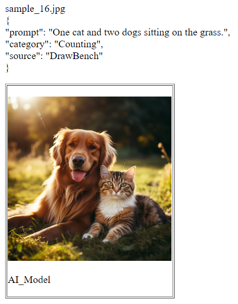
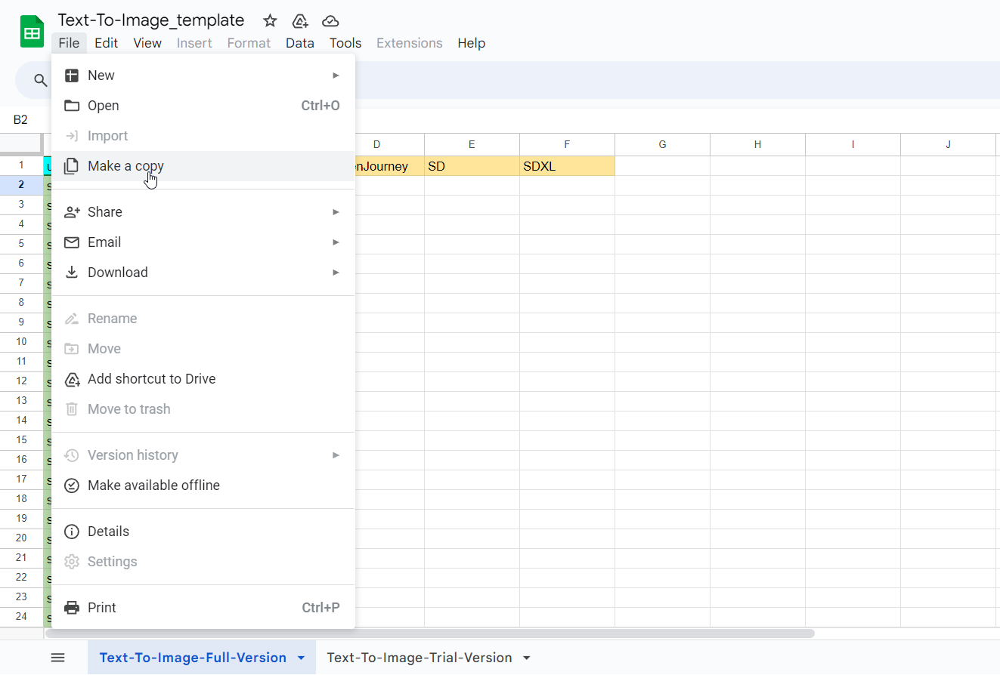
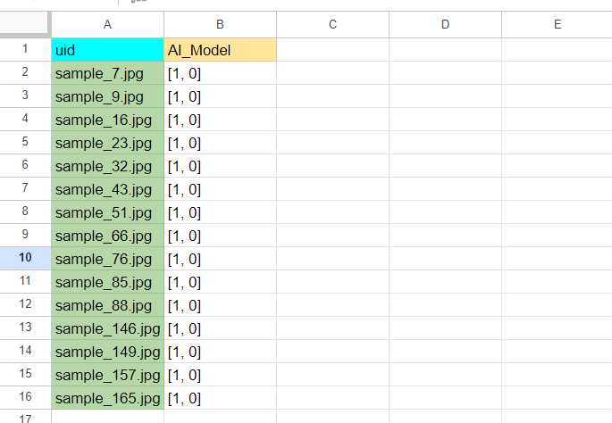

Introduction
Hello Rater! Thank you for participating our AI Image rating experiment.
Rating Instruction
To standardize the conduction of a rigorous human evaluation, we stipulate the criteria for each measurement as follows:
- Semantic Consistency (SC), score in range
[0, 0.5, 1] - Perceptual Quality (PQ), score in range
[0, 0.5, 1]
We present each image with a human evaluation in [SC score,PQ score]. i.e. [SC, PQ]
Rating Guide Checklist Table (T2I)
| Semantic Consistency (SC) Rating | |||
|---|---|---|---|
| Is Image following the prompt? | / | / | SC rating |
| no following at all | / | / | 0 |
| following some part | / | / | 0.5 |
| following most part | / | / | 1 |
| Perceptual Quality (PQ) Rating | |||
| Objects in image | Artifacts | Unusual sense | PQ rating |
| Unrecognizable | serious | Any | 0 |
| Recognizable | some | Any | 0.5 |
| Recognizable | Any | some | 0.5 |
| Recognizable | none | little or None | 1 |
Artifacts and Unusual sense, respectively, are:
- Distortion, watermark, scratches, blurred faces, unusual body parts, subjects not harmonized
- wrong sense of distance (subject too big or too small compared to others), wrong shadow, wrong lighting, etc.
Examples:
Sometimes the prompt might contain misspell words / rare words / words that are contradictory, those are intended.
For misspell words/ rare words, please google the words and make sure you understand what the meaning is.
prompt means the image description.
Case: Rating Conflicting image
"prompt": "A panda making latte art."
OutputA|OutputB|OutputC


- This is how I would rate them:
- OutputA:
[0.5, 1]. SC=1: panda should be the one making the art instead of being in the latte. Only panda and latte words matched but not panda making latte art. PR=1: Lighting looks reasonable, No distortion found. - OutputB:
[0.5, 1]. SC=0.5: panda is drinking instead of making latte art. PR=1: minor distortion found on the panda's hand. - OutputC:
[1, 1]. SC=1: The prompt match perfectly with the image. PR=1: minor distortion found on the panda's left hand.
Case: Rating Counting image
"prompt":"One cat and two dogs sitting on the grass."
OutputA|OutputB|OutputC


- This is how I would rate them:
- OutputA:
[1, 1]. SC=1: prompt perfectly align. PR=1: minor distortion on the cat's facial features. - OutputB:
[0.5, 1]. SC=0.5: 3 dogs appeared instead of 1 cat and 2 dogs. PR=1: minor distortion was found on the animal's face and the watermark. - OutputC:
[1, 1]. SC=1: The prompt match perfectly with the image. PR=1: minor distortion on the dog's facial features.
Case: Rating Positional image
"prompt": "A stop sign on right of a refrigerator."
OutputA|OutputB|OutputC


- This is how I would rate them:
- OutputA:
[0.5, 1]. SC=0.5: refrigerator not found but the stop sign is here. PR=1: minor distortion on the cat's facial features. - OutputB:
[0, 0.5]. SC=0: Failed to generate refrigerator nor the stop sign. PR=0.5: The whole thing looks unnatural. - OutputC:
[1, 1]. SC=1: The prompt match perfectly with the image. PR=1: The stop sign looks like pinned on the wall with an unnatural angle.
Case: Rating Text image
"prompt":"A sign that says 'Deep Learning'."
OutputA|OutputB|OutputC


- This is how I would rate them:
- OutputA:
[0.5, 1]. SC=0.5: A sign appeared, but failed to spell the word. PR=1: The image look generally real but with some lighting issues. - OutputB:
[0.5, 0.5]. SC=0.5: A sign appeared, but failed to spell the word. PR=0.5: The background looks so unnatural. - OutputC:
[0.5, 0]. SC=0.5: A sign appeared, but failed to spell the word. PR=0.5: Heavy distortion on both text and strong artifacts in the background.
Case: Rating Misspellings image
"prompt":"Bzaseball galove."
OutputA|OutputB|OutputC


- The prompt should mean "Baseball glove". This is how I would rate them:
- OutputA:
[1, 1]. SC=1: It is a baseball glove. PR=1: It looks highly resemble to a baseball glove. - OutputB:
[0, 0.5]. SC=0: It's just some balls, not even a baseball. PR=0.5: The balls are stacking in an unnatural way. - OutputC:
[0, 0]. SC=0: It looks similar to a baseball court but no baseball nor glove appeared in the image. PR=0: The image is heavily distorted as the objects cannot be recognized.
Case: Rating Long prompt image
Long prompt ratings are highly subjective.
"prompt":"a beautiful photorealistic anime illustration of urbex industrial architecture city architecture unfinished building abandoned post office by renzo piano, laser extraterrestial sunset lake vaporwave elysian at night reclaimed by nature magic realism myst wilderness, archdaily, wallpaper, highly detailed, trending on artstation. "
OutputA|OutputB|OutputC


- Let's analyze the prompt.
- style: photorealistic, anime, renzo piano, vaporwave
This is how the renzo piano building looks like (just by googling). We can assume its some kind of industrial building.
This is how vaporwave looks like (just by googling). We can assume it is a style dominated by a mixture of purple-like colors.


- Then we can get the idea of the prompt (it's subjective): an illustration of unfinished/abandoned renzo piano style industrial building, sunset vaporwave
- This is how I would rate them:
- OutputA:
[1, 1]. SC=1: The image showed the industrial building, the sunset, and the vaporware (mixed with anime) feeling. PR=0.5: The ground and the bridge on the top look distorted and give an unnatural feeling. - OutputB:
[1, 1]. SC=1: The image showed the industrial building, the sunset, and the vaporware feeling. PR=1: The image generally looks real and with nice reflection, but the roof lighting looks unnatural. - OutputC:
[0.5, 0.5]. SC=0.5: The image showed the sunset, and the vaporware (mixed with anime) feeling, but a building is not found. PR=0.5: The trees appeared in an unnatural way. Also, artifacts appeared on the railings.
Now you should be ready to rate the image.
How to complete the task
Before you start working on the task, please be sure that you already reigistered with us on Prolific.
We will examine the statistic to reject poor submissions. Please follow the guideline strictly.
First open the visualization link in a new page: https://chromaica.github.io/Temp/ImagenHub_TinyExp_1/

The website might freeze for a while due to high amount of images.
Then go to the googlesheet https://docs.google.com/spreadsheets/d/1wFSIfwT1Sm7G2uDWcW5nt6Dd8uj_d4OJfy91TuApciQ/edit?usp=sharing and make a copy to your own google account
It might looks something like this:

After copying the googlesheet to your drive, you should be able to edit the file safely.
Start filling the image score in [SC,PR] format for images that align the uid in the visualization link.
The filling should look like something like this: each image is rated with [SC, PR] score.

Please double check the dot (.) and comma (,) Submission with too many mistakes will be rejected.
How to submit
Once the labelling is done, please download the current sheet as .tsv file.

Finally, attach the tsv file through emailing to m3ku@uwaterloo.ca
Please list the email title as
[Prolific] AI-Generated Image Rating
For the content of the email, please follow this template:
Hi,
I am a participant of the Rating AI-Generated Image Quality Task: Text-To-Image TinyExp_1.
My ID:
Best,
Then message us on Prolific saying that you have finished the task. Send us your ID so we can align with your email.
You should get a response within 24 hours if the format is right. And the payment will sent through Prolific within 12 hours once you get the email reply.